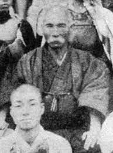

Anko Asato (安里 安恒, Asato Ankō, Azato Yasutsune in Japanese, 1827-1906) was a Ryūkyūan master of karate. He and Ankō Itosu were the two main karate masters who taught Gichin Funakoshi, the founder of Shotokan karate. Not much is known about him,[1] and most information on him comes from Funakoshi. Many articles contain information about Asato,[2][3][4][5][6] but the relevant parts are clearly based on Funakoshi's descriptions of him.[7]
Funakoshi first met Asato when he was a schoolmate of Asato's son; he called Asato " one of Okinawa's greatest experts in the art of karate."[8] According to Funakoshi, Asato's family belonged to the Tunchi (殿内) class (hereditary town and village chiefs), and held authority in the village of Asato, halfway between Shuri and Naha, and he was not only a master of karate, but also skilled at riding horses, Jigen-ryū kendō (swordsmanship), archery, and an exceptional scholar.[7]
In a 1934 article, Funakoshi noted that Asato and Itosu had studied karate together under Sōkon Matsumura. He also related how Asato and Itosu once overcame a group of 20-30 attackers, and how Asato set a trap for troublemakers in his home village. In his 1956 autobiography, Funakoshi recounted several stories about Asato, including Asato's political astuteness in following the government order to cut off the traditional men's topknot; Asato's defeat of Yōrin Kanna, in which the unarmed Asato prevailed despite Kanna being armed with an unblunted blade; his demonstration of a single-point punch (ippon-ken); and Asato and Itosu's friendly arm-wrestling matches.[7]